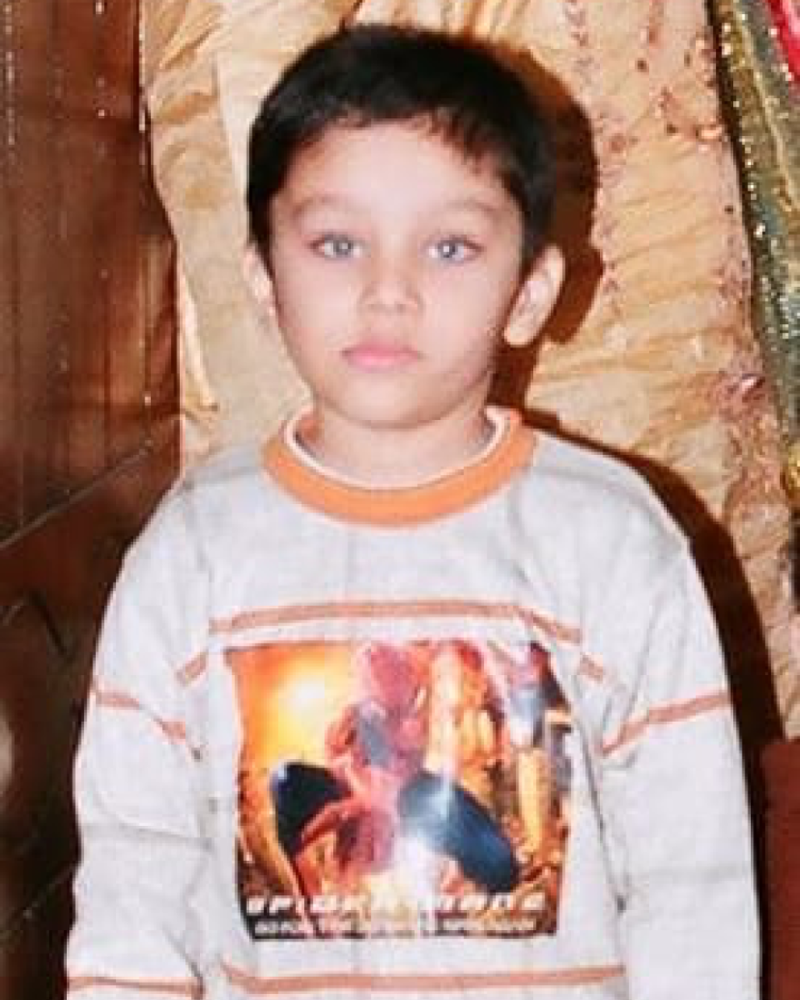
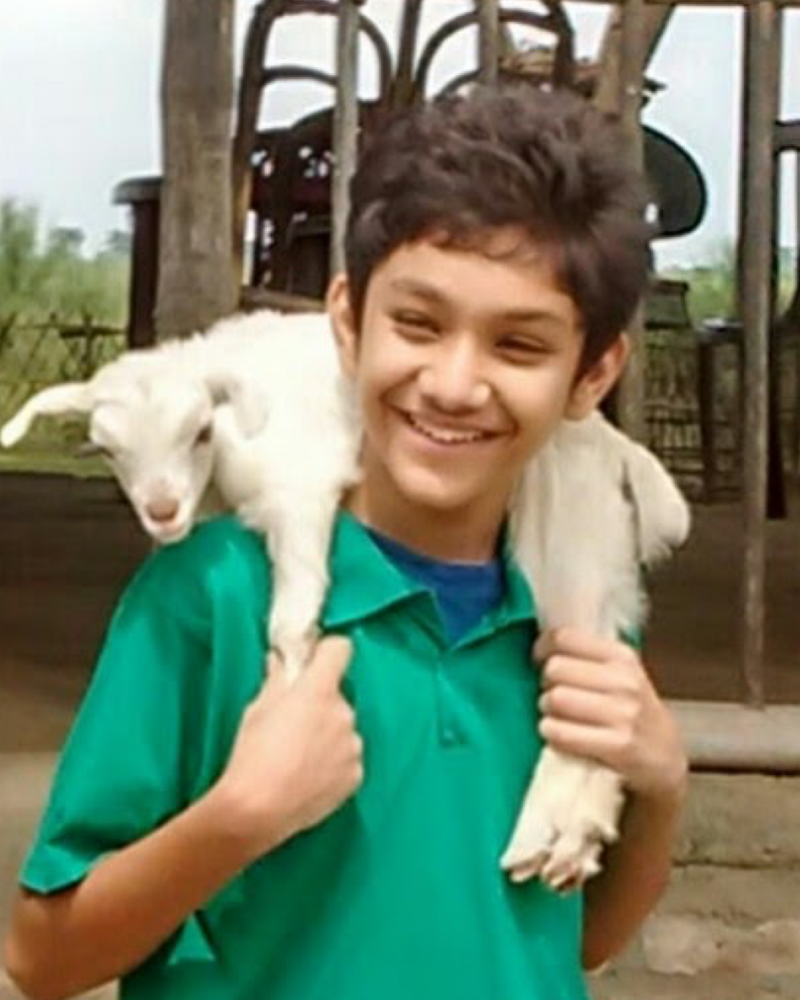
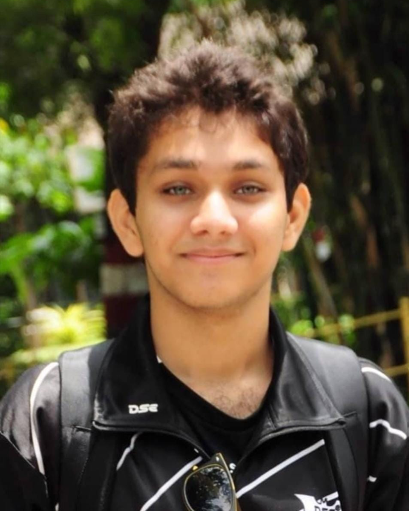
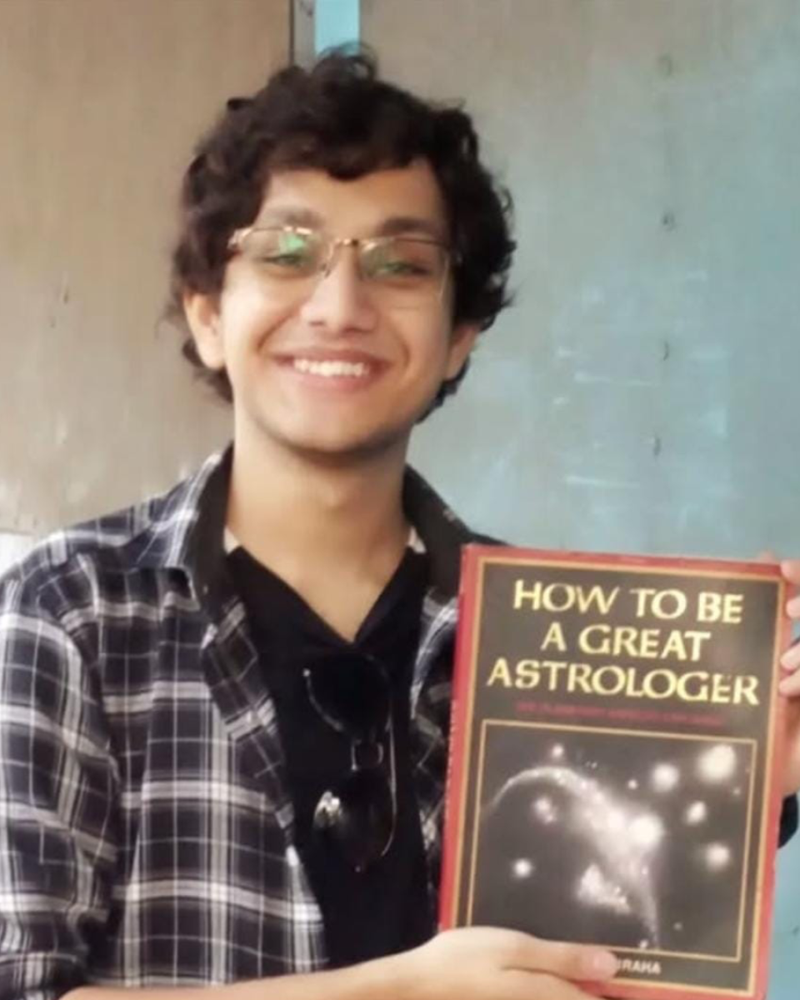
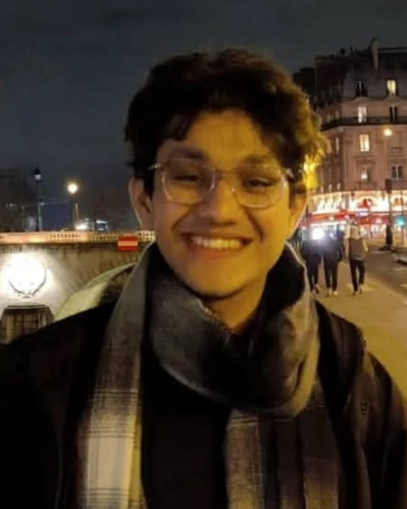
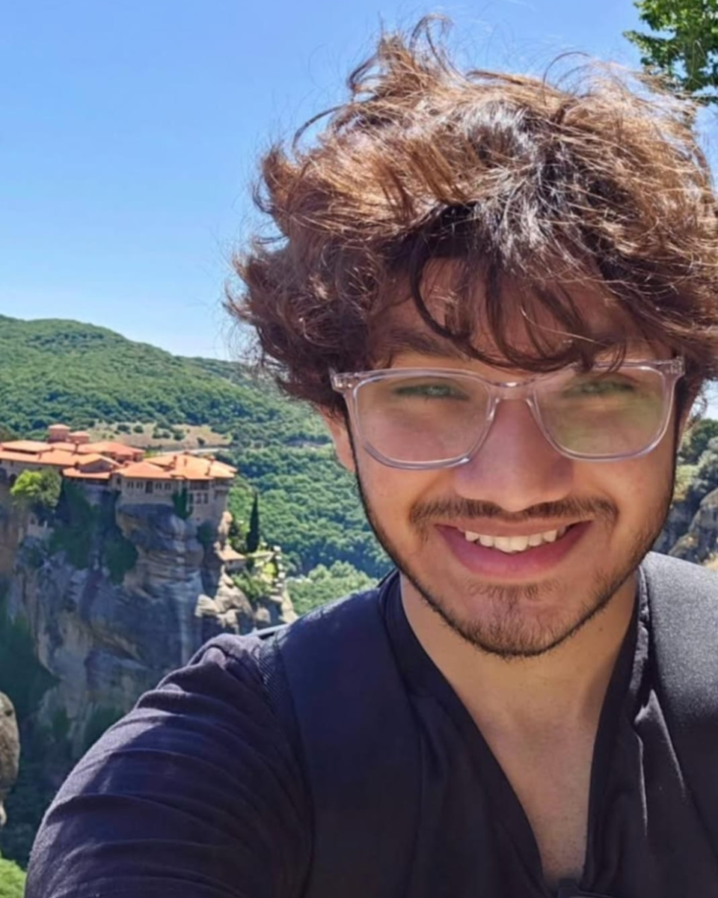
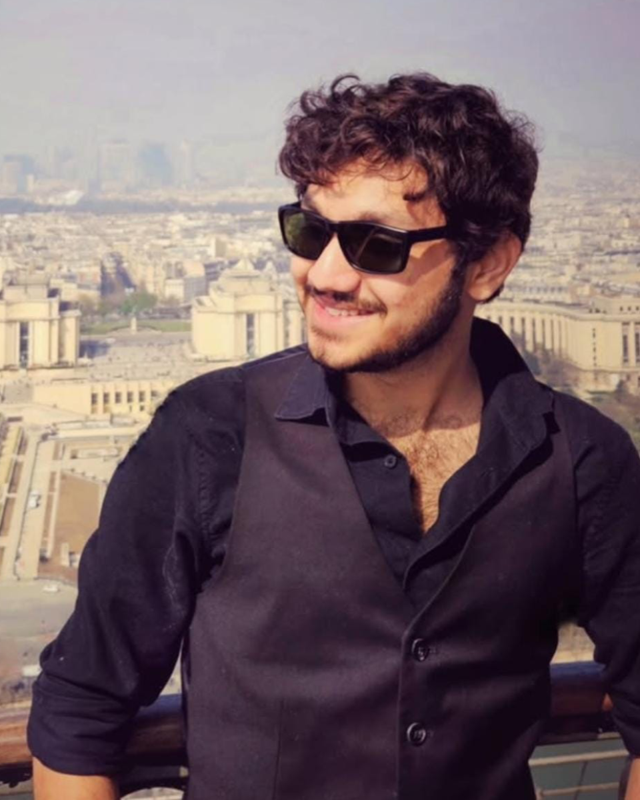
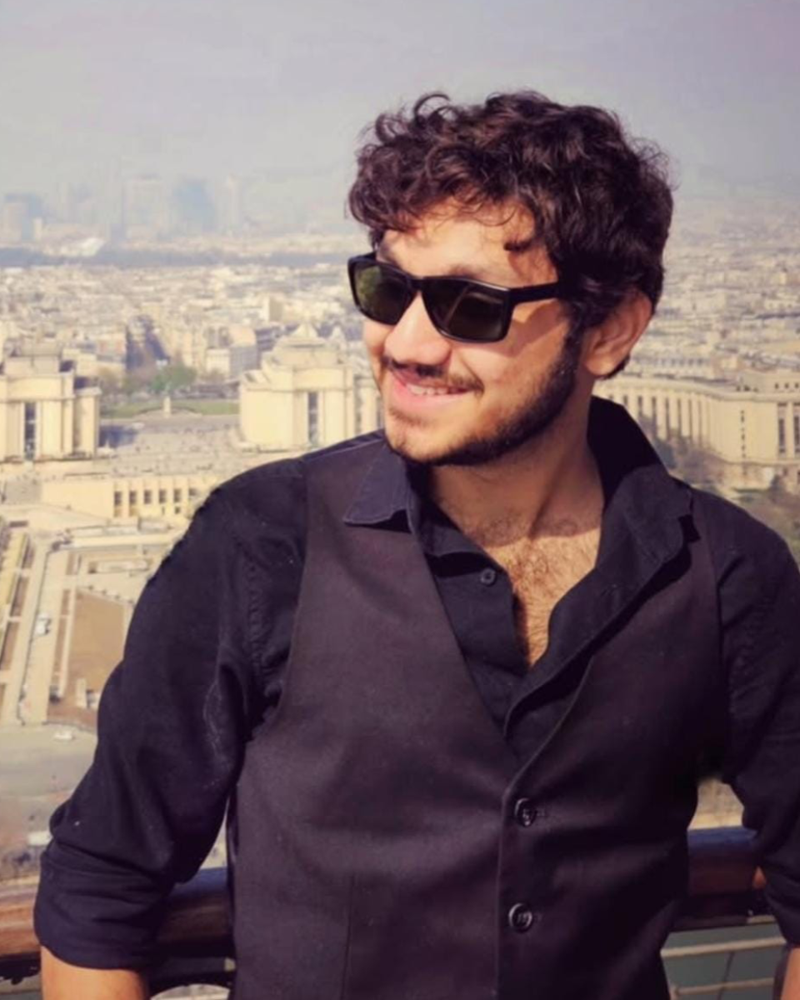
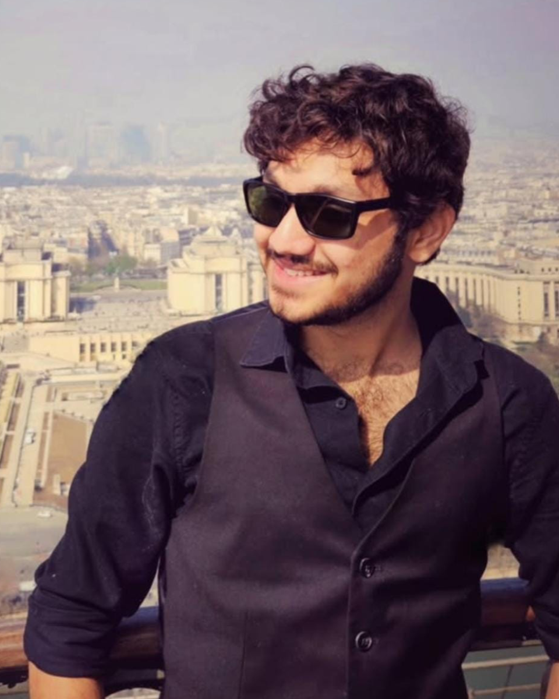

 


2005
2012
2018
2021
2023
2024
2025
About Me
I am a doctoral researcher working at the intersection of astrophysics and machine learning. I am currently based at Foundation for Research and Technology - Hellas (FORTH) : Institutes of Computer Science and Astrophysics in Crete, Greece, with a strong collaboration with the CosmoStat Laboratory in the Department of Astrophysics at CEA Paris-Saclay. My general research and work interests lie in:
- Machine learning applications in scientific research, with real world impact
- Predictions, classification, development of agentic AI
- Delving into the black-box: what does the machine learn? - Interpreting the functioning of neural networls and deep learning
- Fields of application include:
- Interested in and currently pursuing answers to fundamental questions about the building blocks of the Universe
- Interested in ecology, wildlife, earth and climate sciences
- Expanding expertise to space technology research and satellite observations
- Signal processing in multi-modal data
- Reproducible science and scientific software development
- Early-Universe (high-z) galaxy formation and evolution
- Astronomical image and spectral cube processing & Analysis
- Large-scale structures of the Universe and cosmology
- Machine/Deep learning for astrophysical and cosmological inferences
When I am not immersed in research or coding, I enjoy traveling, photography, and exploring new cultures. I believe that a well-rounded life outside of academia and research enriches my perspective and creativity in my scientific endeavours. Some more 'lore' about me:
I come from the eastern part of India - Kolkata, West Bengal - a city and a state famous for mouth watering sweets, street food, arts, literature and culture. Needless to say, I have had my fair share of indulgence in the first of these so much so that my local sweet vendor knows that he is about ot make a great profit every time I return home.
I moved to Tirupati, Andhra Pradesh, India - a state famous for extemely spicy food - for an integrated Bachelor of Science - Master of Science (BS-MS) dual degree programme at the Indian Institute of Science Education and Research (IISER) Tirupati. I spent 5 amazing years there learning physics, doing research, and making lifelong friends - or that is what you would think...I mean the physics research and friends part is definitely true, but 5 was more like 3 because COVID struck the world right in the middle of the peak years of my undergraduate life haha. Nevertheless, I completed my degree within the stipulated timeframe and graduated with both BS and MS degrees in the summer of 2023.
I was fortunate to be selected for a fully funded PhD position and moved to Heraklion, Crete, Greece - also well known in Europe for fantastic (and healthy) food, for the TITAN Project at FORTH in late 2023. Moving to a new country and adapting to a different culture has been an enriching experience, and I have been fortunate enough to travel to several beautiful places in Europe since then, both pofessionally for conferences, as well as in a personal capacity. I also collaborate with researchers at CEA Paris-Saclay, France, allowing me to explore and live in beautiful Paris.
In the banner at the top of the page, you can see my evolution from a shy, pasty kid obsessed with Spider-Man, to a reasonably well-adjusted adult, with a reasonable good tan, still reasonably into Spider-Man. The timeline markers correspond to some such significant years and events in my life, each with its own story and memory attached. Hover over the dots/images to get a glimpse into those moments!
And lastly, since it is evident that I am a huge gastronome as I have been introducing places on the basis of food, it also stands to reason that I love cooking as well. So if you ever visit me, be prepared to be treated to some delicious home-cooked meals (with a fusion twist of course) ! Below are few of the dishes I have cooked (and remembered to take pictures of) before inevitably crying at the thought of washing so many utensils. Thank you for reading this far, enjoy the website, you may find more than what you expect here ;)
{kind=link}
{kind=link}
{kind=link}
{kind=link}
{kind=link}
{kind=link}
{kind=link}
{kind=link}
{kind=link}
{kind=link}